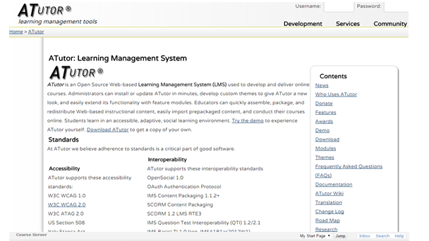

ATutor es un Sistema de Gestión de Contenidos de Aprendizaje (LCMS, de sus
siglas en inglés LearningContent Management System) (por tanto es un sistema
que permite la creación del contenido dentro del sistema) y un entorno de red
social, de código abierto, basado en Web.

Desde el punto de vista de los
administradores de la plataforma, su instalación o actualización es rápida y
pueden desarrollar temas para cambiar la apariencia de la plataforma así como
instalar nuevos módulos para ampliar las funcionalidades de la misma. Los
instructores pueden rápidamente crear, configurar y empaquetar cursos para
su redistribución en red o importar cursos adaptados al estándar SCORM
(Shareable Content ObjectReference Model). Los estudiantes aprenden en
un entorno adaptativo y social. ATutor ha sido diseñado con el objetivo
de lograr accesibilidad y adaptabilidad para personas con algún tipo de
discapacidad.